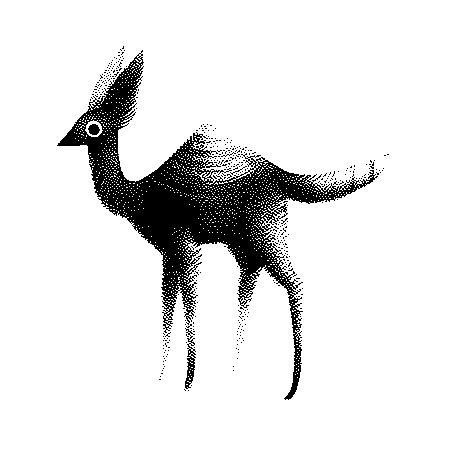
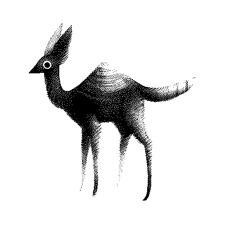

Wiktopher is a fiction story (of ~60,000 words) taking place in a fantasy world. The novel will have a number of added content that will permit the reader to learn more of the world and of its people.
Devlog #001
Soronan Desert
The Soronan Desert is a vast desert wildnerness stretching over the Central Rim and the Northern and Southern Plains. It is a continous body of sand which occupies most of the planet.
The Central Rim
A belt of semi-arable land that circles the planet. Most of the water stone wells are situated in this area, others can found elsewhere but may be further apart and more difficult to locate.
Water Stones
A liquid essential to life, that is preserved in a hard membrane. The water can be extracted, usually with a water stone press, or a heavy tool. There is also the possibility of putting the stone in the mouth; overtime, liquid will seep from a collection of pores on the water stone's surface. Using this technique can aid to prevent dehydration, especially when traveling long distances in the desert.
The water stones are found in pockets of air underground, some wells may carry as much as thousand stones or as little as a hundred. Waterlillies are used to locate the wells, they typically grow overtop of such sites in great numbers.
Is it thought that the planet originally had no water, and that it came via asteroids. There are 4 craters: the Loran crater, the Tyko crater, the Nordlok crater and the Reita crater. All of these were once basins full of water. Overtime, the water receded into the soil and began to pearl; a result of the composition of the sand on the planet, which helped to form a hard membrane. Because the planet is mostly sand dunes, some of the craters were partially filled. This extra layer of sand
Cactub
A Cactub is a nutritious, bulbous root vegetable primarily found in the Northern Plains, where water stones are scarce. Their outer core is hard, and covered in tiny protrusions called 'nubs'. These nubs helps the cactub move in and out of the ground. The flesh is a white colour, and has a markedly higher fat content than other vegetables. It can be made into cactub oil, it has a high smoke point, making it the ideal cooking oil. Cactubs are a Finiku favourite, served sliced on muckwheat bread. They spend most of their time underground, and only emerge at night to gather moisture from the surrounding air. Cactubs are sensititive to loud noises and movements, and they temporarily seize when panicked.
Muckwheat
Muckwheat grows in the
Sheshell crabs
Sheshell crabs are pearly white creatures that bear a shell with a face. It is thought that if you do them harm, they will remember your face and chase you to the ends of the deserts. They have a near indestructible shell, it is used to make pottery and other hard materials. The world used to be populated by many of these creatures, changes in weather have caused many to die, but the disintegrated shells have contributed to much goods in the land. The sheshell crab dust helped form a hard membrane around the pearled-up water, thusly preserving the water of the planet near the surface.
 

Gender neutral writing
Wiktopher is written without the use of gender pronouns, this eliminates the tendency to modify our behaviour based on genders.
Language
The book will feature songs in Ilken, a whistled language spoken by the Verido. These songs will be playable with an instrument.
It is used to speak over long distances, and to converse with the ilks. The language was adapted from ilk tongue, which was first deciphered and adapted to be spoken with lips by Balandri.
A, E, I, O, U, Y and H are paired with notes and the rest consist of pauses and elongated notes.
A Do B . L ___ T ....
E Re C _ M .__ U ____
I Mi D .. N .._ V .___
O Fa F __ P __. W ..__
U Sol G ._ Q _.. X ___.
Y La J _. R ._. Y __..
H Si K ... S _._ Z .__.
Examples:
VOLARE = Fa(.___) Do(___) Re(._.)
VO V(.___) O(Fa)